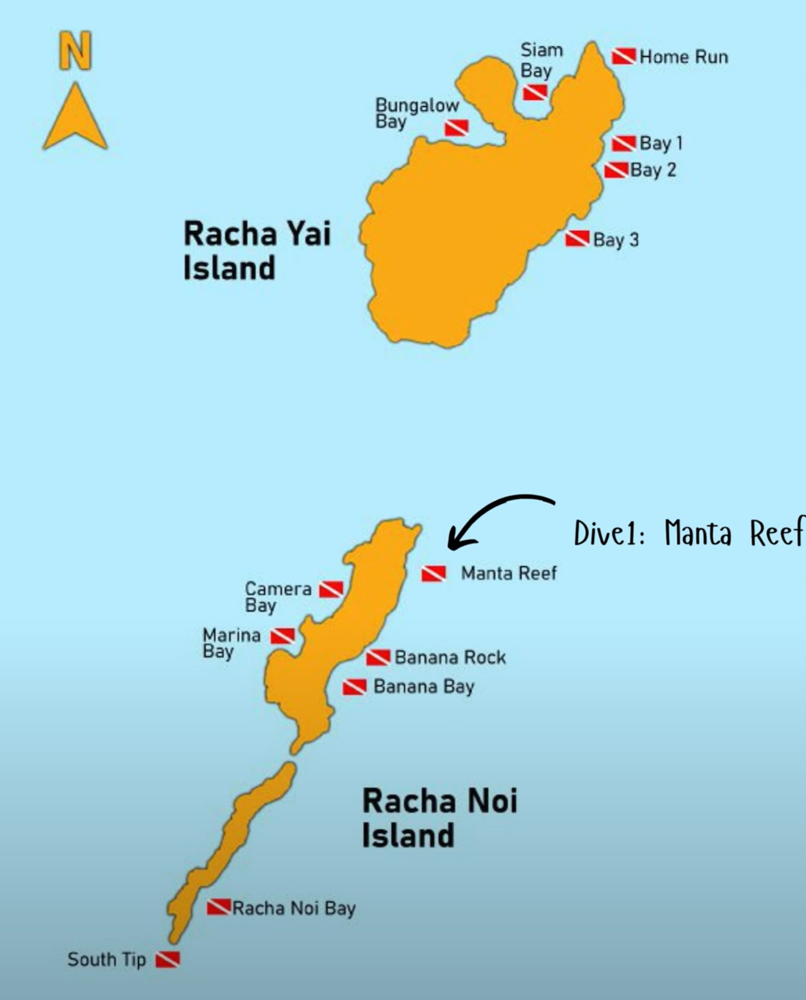
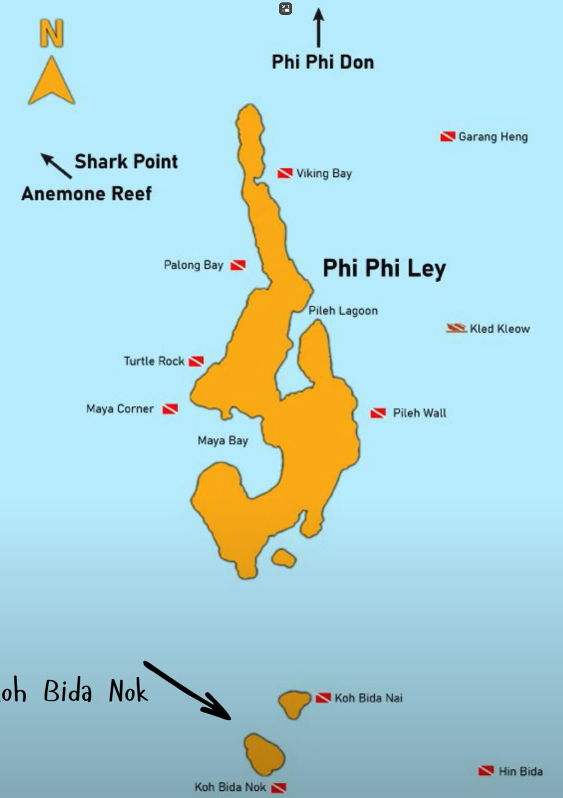

📋 Executive Summary
Ausgangslage
- Dein Profil: Rescue Diver, Nitrox-zertifiziert, 41 Tauchgänge – sehr erfahren
- Begleiter: 2× AOWD mit je ~10 Tauchgängen – solide Basis, limitierte Tieftauch- und Strömungserfahrung
- Zeitfenster: 23.02.–28.02.2026 (6 verfügbare Tage), maximal 3 auswählen
- Tauchbasis: Scuba Deep Phuket, Boot M/V Sirolo (24m, luxuriös, Nitrox an Bord)
- Rückflug: 02.03.2026 (Montag) – letzter Tauchgang muss 24h+ vorher sein
Hauptziel & Kernerkenntnis
Hauptziel: Maximierung von Walhai- und Manta-Sichtungschancen bei gleichzeitiger Sicherheit und Eignung für die Erfahrungsstufe eurer Begleiter.
📅 1. Verfügbare Tauchtage & Touren (23.–28.02.2026)
Tabellarische Gesamtübersicht
| Datum | Wochentag | Scuba Deep Tour | Tauchplätze | TG | Verfügbar |
|---|---|---|---|---|---|
| 23.02. | Montag | Phi Phi & Shark Point | Bida Nok, Phi Phi Ley (Turtle Rock), Shark Point | 3 | ✅ |
| 24.02. | Dienstag | King Cruiser, Shark Point & Koh Dok Mai | King Cruiser Wreck, Shark Point, Koh Dok Mai | 3 | ✅ EINZIGARTIG |
| 25.02. | Mittwoch | Racha Noi & Racha Yai | Racha Noi (South Tip, Marina Bay), Racha Yai (Bay 1) | 2–3 | ✅ |
| 26.02. | Donnerstag | Phi Phi & Shark Point | Bida Nok, Phi Phi Ley (Turtle Rock), Shark Point | 3 | ✅ |
| 27.02. | Freitag | Racha Noi & Racha Yai | Racha Noi (South Tip, Marina Bay), Racha Yai (Bay 1) | 2–3 | ✅ |
| 28.02. | Samstag | Phi Phi & Shark Point | Bida Nok, Phi Phi Ley (Turtle Rock), Shark Point | 3 | ✅ |
🌊 Detaillierte Tauchplatz-Informationen
Tour 1: Phi Phi & Shark Point (Mo, Do, Sa)
| Tauchplatz | Fahrzeit | Min. Zert. | Schwierigkeit | Max./⌀ Tiefe | Sicht Feb | Strömung | Walhai | Manta | Highlights |
|---|---|---|---|---|---|---|---|---|---|
| Bida Nok | 1,5–2h | OWD+ | Anfänger–Fortgeschritten | 25–30m / 12–18m | 15–25m | Moderat | 10–15% | 1–3% | Schwarzspitzen-Riffhaie (80–90%!), Leoparden-Haie, Bambus-Haie, Höhle bei 20m, Swim-Throughs |
| Turtle Rock | 1,5–2h | OWD+ | Anfänger–Fortgeschritten | 22–25m / 10–15m | 15–25m | Mild | 5–8% | <1% | Schildkröten (häufig), Schwarzspitzen, Muränen, Banded Sea Kraits, Canyons |
| Shark Point | 1,5h | OWD+ | Anfänger–Fortgeschritten | 30m / 15m | 10–20m | Moderat–Stark | 10–15% | <1% | Leoparden-Haie (95%!), Seepferdchen, Ghost Pipefish, Weichkorallen, Marine Sanctuary seit 1992 |
Tour 2: King Cruiser, Shark Point & Koh Dok Mai (NUR Dienstag!)
| Tauchplatz | Fahrzeit | Min. Zert. | Schwierigkeit | Max./⌀ Tiefe | Sicht Feb | Strömung | Walhai | Manta | Highlights |
|---|---|---|---|---|---|---|---|---|---|
| King Cruiser Wreck | 1,5–2h | AOWD | Fortgeschritten | 32–35m / 18–25m | 15–25m | Moderat–Stark | 15–25% ⭐ | <1% | Höchste Walhai-Chance Phukets! Fähren-Wrack "Thaitanic" (1997), 85m lang, Bambus-Haie, Barrakuda-Schulen, KEINE Penetration! |
| Shark Point | 1,5h | OWD+ | Anfänger–Fortgeschritten | 30m / 15m | 10–20m | Moderat–Stark | 10–15% | <1% | Leoparden-Haie (95%!), Seepferdchen, Ghost Pipefish, Weichkorallen |
| Koh Dok Mai | 1,5h | OWD+ | Anfänger–Fortgeschritten | 26–30m / 12–20m | 10–20m | Mild–Stark | 3–5% | <1% | Tiger-Seepferdchen, Ghost Pipefish, Anglerfische, Nacktschnecken, Kalksteinwand, 2 Höhlen, bestes Makro Phukets |
Tour 3: Racha Noi & Racha Yai (Mi, Fr)
| Tauchplatz | Fahrzeit | Min. Zert. | Schwierigkeit | Max./⌀ Tiefe | Sicht Feb | Strömung | Walhai | Manta | Highlights |
|---|---|---|---|---|---|---|---|---|---|
| Racha Noi South Tip | 2–2,25h | AOWD | Fortgeschritten–Experte | 30–35m / 18–25m | 20–30m | Stark | 8–12% | 15–25% ⭐ | Manta-Reinigungsstation (ganzjährig!), Granit-Felsen wie Similans, Gorgonien. ANSPRUCHSVOLLSTER SPOT! |
| Racha Noi Marina Bay | 2–2,25h | AOWD | Fortgeschritten | 25–30m / 15–21m | 20–30m | Moderat–Stark | 5–8% | 5–10% | Granite Rocks, Swim-Throughs bei 21–23m, Blaupunkt-Stachelrochen |
| Racha Yai Bay 1 | 1,5h | Anfänger | Anfänger | 25–30m / 12–18m | 25–35m ⭐ | Sehr mild | 2–3% | <1% | Kristallklares Wasser (beste Sicht!), Schildkröten, Korallengärten, perfekt zum Eingewöhnen |
📊 2. Drei vollständige Alternativ-Pläne
PLAN A – Beste Balance (HAUPTEMPFEHLUNG) ⭐⭐⭐⭐⭐
Philosophie: Maximale Walhai- und Manta-Chancen + perfekte Balance aus Intensität und Erholung + King Cruiser gesichert
Detaillierter Zeitplan
| Tag | Datum | Tour | Tauchplätze | TG | Highlights |
|---|---|---|---|---|---|
| – | 23.02. Mo | RUHETAG | Ankunft / Eingewöhnung, Check-in Scuba Deep | – | Vorbereitung, Ausrüstung anpassen, Briefing |
| 1 | 24.02. Di | King Cruiser + Shark Point + Koh Dok Mai | TG1: King Cruiser (32m), TG2: Shark Point (15–25m), TG3: Koh Dok Mai (15–25m) | 3 | Haupt-Walhai-Mission! Höchste Chance (30–40%), Wrack, Leoparden-Haie, Makro |
| 2 | 25.02. Mi | Racha Noi & Racha Yai | TG1: Racha Noi South Tip (25–35m), TG2: Marina Bay (18–25m), TG3: Racha Yai (15–20m) | 2–3 | Manta-Mission! (15–25%), beste Sicht (25–35m) |
| – | 26.02. Do | RUHETAG | Regeneration, Entsättigung | – | Sightseeing, Strand, Entspannung |
| – | 27.02. Fr | RUHETAG | Regeneration vor letztem Tag | – | Pool, Kultur, Vorbereitung Tag 3 |
| 3 | 28.02. Sa | Phi Phi & Shark Point | TG1: Bida Nok (18–25m), TG2: Turtle Rock (12–18m), TG3: Shark Point (15–25m) | 3 | Finale Grande: Schwarzspitzen (80–90%), Schildkröten, Leoparden-Hai |
| – | 01.03. So | RUHETAG | Kein Tauchen (24h-Regel) | – | Entspannung vor Rückflug |
| – | 02.03. Mo | ABREISETAG | Rückflug | – | 48h seit letztem TG ✅ |
Sichtungswahrscheinlichkeiten Plan A (pro Tag)
| Tierart | Tag 1 (24.02.) | Tag 2 (25.02.) | Tag 3 (28.02.) | Gesamt |
|---|---|---|---|---|
| Walhai | 30–40% (King Cruiser + Shark Point) | 8–12% (Racha Noi) | 20–25% (Bida Nok + Shark Point) | 55–70% |
| Manta | <1% | 15–25% (South Tip) | <1% | 15–25% |
| Leoparden-Hai | 95% (Shark Point) | 70% (Racha Noi) | 95% (Shark Point) | 98% |
| Schwarzspitzen | 30% (King Cruiser) | 20% (Racha Noi) | 80–90% (Bida Nok) | 85% |
| Schildkröten | 40% (Koh Dok Mai) | 80% (Racha Yai) | 85% (Turtle Rock) | 90% |
| Sicht >25m | 60% | 90% (Racha Yai) | 70% | 80% |
✅ Vorteile Plan A
- King Cruiser inkludiert (nur Dienstag verfügbar!) – höchste Walhai-Chance
- Manta-Chance durch Racha Noi South Tip (15–25%) – einzige Tagesausflug-Option
- Perfekte Ruhetag-Verteilung: 2 Tage zwischen Tag 2 und 3 für Regeneration
- Höchste Walhai-Gesamtchance: 55–70% über alle Tauchgänge
- Flugsicherheit: 2 volle Tage (48h) vor Rückflug
- Maximale Vielfalt: Wrack (King Cruiser), Pinnacles (Shark Point), Wände (Koh Dok Mai), Felsen (Racha Noi), Höhlen (Bida Nok)
- Optimal für eure Gruppe: Du (erfahren) führst bei Tag 1 (King Cruiser 32m)
- Leoparden-Haie fast garantiert: 2× Shark Point (98%)
- Schwarzspitzen-Haie sehr wahrscheinlich: Bida Nok (80–90%)
- Alle Top-Spots abgedeckt: King Cruiser, Racha Noi, Bida Nok, Shark Point
❌ Nachteile Plan A
- Intensiver Start: King Cruiser (32m) und Shark Point am ersten Tauchtag – anspruchsvoll ohne Eingewöhnung
- Racha Noi South Tip: Starke Strömungen, 30–35m Tiefe – anspruchsvollster Spot für AOWD mit 10 TG
- Keine Eingewöhnung: Direkter Start mit tiefstem Tauchgang (King Cruiser 32–35m)
- Lange Bootsfahrten: Tag 1 (1,5–2h), Tag 2 (2–2,25h), Tag 3 (1,5–2h) – Seekrankheit-Risiko
PLAN B – Entspannter Einstieg ⭐⭐⭐⭐
Philosophie: Gradueller Schwierigkeitsaufbau, sanfter Start, ideal für vorsichtige Gruppen
Detaillierter Zeitplan
| Tag | Datum | Tour | Tauchplätze | TG | Highlights |
|---|---|---|---|---|---|
| – | 23.02. Mo | RUHETAG | Ankunft / Eingewöhnung | – | Check-in, Vorbereitung |
| – | 24.02. Di | RUHETAG | Regeneration | – | ❌ King Cruiser verpasst! |
| 1 | 25.02. Mi | Racha Noi & Racha Yai | TG1: Racha Yai (15–20m), TG2: Marina Bay (18–25m), TG3: South Tip (25–35m) | 2–3 | Sanfter Start mit Racha Yai, dann Manta-Mission |
| 2 | 26.02. Do | Phi Phi & Shark Point | TG1: Bida Nok, TG2: Turtle Rock, TG3: Shark Point | 3 | Schwarzspitzen, Schildkröten, Leoparden-Haie |
| – | 27.02. Fr | RUHETAG | Regeneration | – | Entspannung |
| 3 | 28.02. Sa | Phi Phi & Shark Point | (Wiederholung) Bida Nok, Turtle Rock, Shark Point | 3 | Wiederholung Lieblingsspots |
| – | 01.03. So | RUHETAG | Kein Tauchen | – | – |
| – | 02.03. Mo | ABREISETAG | Rückflug | – | 48h seit letztem TG ✅ |
Sichtungswahrscheinlichkeiten Plan B
| Tierart | Tag 1 (25.02.) | Tag 2 (26.02.) | Tag 3 (28.02.) | Gesamt |
|---|---|---|---|---|
| Walhai | 8–12% | 20–25% | 20–25% | 35–45% |
| Manta | 15–25% | <1% | <1% | 15–25% |
| Leoparden-Hai | 70% | 95% | 95% | 95% |
| Schwarzspitzen | 20% | 80–90% | 80–90% | 90% |
| Schildkröten | 80% | 85% | 85% | 90% |
✅ Vorteile
- Sanfter Einstieg mit Racha Yai
- Manta-Chance erhalten (15–25%)
- Wiederholung Lieblingsspots
- Entspanntere Bedingungen
❌ Nachteile
- Kein King Cruiser! Verpasst die höchste Walhai-Chance
- Geringere Walhai-Gesamtchance: 35–45% (vs. 55–70%)
- Weniger Vielfalt, 2× gleiche Tour
PLAN C – Maximale Tauchzeit ⭐⭐⭐⭐⭐
Philosophie: Früher Start, alle Top-Spots, höchste Walhai-Chancen, für fitte/erfahrene Gruppen
Detaillierter Zeitplan
| Tag | Datum | Tour | Tauchplätze | TG | Highlights |
|---|---|---|---|---|---|
| 1 | 23.02. Mo | Phi Phi & Shark Point | TG1: Bida Nok, TG2: Turtle Rock, TG3: Shark Point | 3 | Sofortiger Start, Schwarzspitzen, Leoparden-Haie |
| 2 | 24.02. Di | King Cruiser + Shark Point + Koh Dok Mai | TG1: King Cruiser (32m), TG2: Shark Point, TG3: Koh Dok Mai | 3 | Haupt-Walhai-Mission |
| – | 25.02. Mi | RUHETAG | Regeneration | – | Nach 2 intensiven Tagen |
| – | 26.02. Do | RUHETAG | Regeneration | – | Vorbereitung Tag 3 |
| 3 | 27.02. Fr | Racha Noi & Racha Yai | TG1: South Tip, TG2: Marina Bay, TG3: Racha Yai | 2–3 | Finale Manta-Mission |
| – | 28.02. Sa | RUHETAG | Optional: Sightseeing | – | – |
| – | 01.03. So | RUHETAG | Kein Tauchen | – | – |
| – | 02.03. Mo | ABREISETAG | Rückflug | – | 3 volle Tage seit letztem TG ✅✅ |
Sichtungswahrscheinlichkeiten Plan C
| Tierart | Tag 1 (23.02.) | Tag 2 (24.02.) | Tag 3 (27.02.) | Gesamt |
|---|---|---|---|---|
| Walhai | 20–25% | 30–40% | 8–12% | 60–75% |
| Manta | <1% | <1% | 15–25% | 15–25% |
| Leoparden-Hai | 95% | 95% | 70% | 98% |
| Schwarzspitzen | 80–90% | 30% | 20% | 85% |
| Schildkröten | 85% | 40% | 80% | 90% |
✅ Vorteile
- Alle Top-Spots enthalten: Phi Phi, King Cruiser, Racha Noi
- Höchste Walhai-Gesamtchance: 60–75%
- 3 volle Tage vor Rückflug (72h)
❌ Nachteile
- Sehr intensiv: 6 TG in 2 Tagen ohne Eingewöhnung
- Kein Eingewöhnen: Direkt Montag starten
- Anspruchsvoll für AOWD mit 10 TG
📊 Vergleichsübersicht der Pläne
Plan A vs. Plan B vs. Plan C
| Kriterium | Plan A ⭐⭐⭐⭐⭐ | Plan B ⭐⭐⭐⭐ | Plan C ⭐⭐⭐⭐⭐ |
|---|---|---|---|
| Startdatum | Dienstag, 24.02. | Mittwoch, 25.02. | Montag, 23.02. |
| King Cruiser | ✅ Ja (Tag 1) | ❌ Nein – verpasst! | ✅ Ja (Tag 2) |
| Walhai-Chance | 55–70% | 35–45% | 60–75% |
| Manta-Chance | 15–25% | 15–25% | 15–25% |
| Leoparden-Hai | 98% | 95% | 98% |
| Schwarzspitzen | 85% | 90% | 85% |
| Schwierigkeitsaufbau | Intensiv → Moderat → Entspannt | Moderat → Entspannt → Entspannt | Entspannt → Intensiv → Moderat |
| Ruhetage | 3 (Mo, Do, Fr) | 2 (Mo+Di, Fr) | 2 (Mi+Do) |
| Tauchgänge gesamt | 8–9 TG | 8–9 TG | 8–9 TG |
| Tage vor Rückflug | 2 volle Tage (48h) | 2 volle Tage (48h) | 3 volle Tage (72h) |
| AOWD-Eignung | ⭐⭐⭐⭐⭐ Optimal | ⭐⭐⭐⭐ Gut | ⭐⭐⭐ Anspruchsvoll |
| Rescue-Eignung | ⭐⭐⭐⭐⭐ Perfekt | ⭐⭐⭐ Zu entspannt | ⭐⭐⭐⭐⭐ Perfekt |
| Vielfalt | Wrack, Pinnacles, Felsen, Höhlen | Felsen, Pinnacles, Höhlen | Höhlen, Wrack, Felsen |
| Gesamtbewertung | ⭐⭐⭐⭐⭐ | ⭐⭐⭐⭐ | ⭐⭐⭐⭐⭐ |
🎯 3. Empfehlung für eure Gruppe
Finale Empfehlung: PLAN A ⭐⭐⭐⭐⭐
Für eure Gruppenkonstellation (Rescue Diver mit 41 TG + 2× AOWD mit ~10 TG) ist Plan A die optimale Wahl:
Für dich (Rescue Diver, 41 TG, Nitrox)
- Alle Spots geeignet und herausfordernd genug
- Nitrox bei King Cruiser (32m) und Racha Noi (30–35m) nutzen = längere Grundzeit, Sicherheitsreserve
- Führungsrolle bei anspruchsvollen Spots
- Rescue-Training gibt Sicherheit bei starken Strömungen
- Maximale Vielfalt = nicht langweilig trotz "nur" 3 Tage
Für deine Begleiter (AOWD, ~10 TG)
- Aufbau-Strategie funktioniert: Intensiver Start (mit deiner Führung), dann Erholung
- King Cruiser (32m) machbar: Konservative Tiefenplanung (max. 28–30m statt 35m)
- Racha Noi South Tip (Tag 2) herausfordernd aber nicht überfordernd: Nach Tag 1 bereits 3 TG = Vertrauensaufbau
- 2 Ruhetage zwischen Tag 2 und 3: Wichtig bei limitierter Erfahrung
- Gradueller Abbau: Tag 1 (anspruchsvoll) → Tag 2 (sehr anspruchsvoll) → 2 Ruhetage → Tag 3 (entspannt)
Für die Großfisch-Sichtungschancen
- King Cruiser essentiell: Nur Dienstag verfügbar, höchste Walhai-Einzelchance (15–25%)
- Racha Noi South Tip: Einzige realistische Manta-Chance als Tagesausflug (15–25%)
- Walhai-Gesamtchance 55–70%: Sehr gut für 3 Tauchtage
- Leoparden-Haie fast garantiert: 2× Shark Point (98%)
- Schwarzspitzen-Haie sehr wahrscheinlich: Bida Nok (80–90%)
Für die Sicherheit
- 48h vor Rückflug: Weit über 24h-Minimum
- 2 Ruhetage zwischen Tag 2 und 3: Komplette Entsättigung
- Du kannst führen: Rescue-Erfahrung + Nitrox gibt Sicherheit
Wann Plan B wählen?
- Begleiter sehr unsicher/vorsichtig
- Keine starken Strömungen oder tiefe TG (>28m) gewünscht
- Bereit, King Cruiser zu opfern
- Aber: Plan B hat massiven Nachteil – ihr verpasst den besten Walhai-Spot!
Wann Plan C wählen?
- Maximal tauchen wollen (sofort Montag starten)
- Begleiter trotz 10 TG sehr fit und selbstbewusst
- Absolut höchste Walhai-Chancen gewünscht (60–75%)
- Aber: Sehr anspruchsvoll ohne Eingewöhnung
📅 Tag 1 – Dienstag, 24. Februar 2026
🚢 King Cruiser + Shark Point + Koh Dok Mai
🎯 Ziel: Maximale Walhai-Chance (30–40%), Wrack-Erlebnis, Leoparden-Haie, Makro
Umrunden des Wracks außen, Walhai-Spotting. Leoparden-Haie, Bambus-Haie, Barrakudas
3 Pinnacles, Leoparden-Haie fast garantiert. Seepferdchen, Ghost Pipefish
Kalksteinwand, 2 Höhlen. Tiger-Seepferdchen, Anglerfische, Makro-Paradies
⚠️ Sicherheit – King Cruiser (32m)
Herausforderungen:
- Tiefe: 32–35m = an AOWD-Limit (max. 30m ohne Deep Specialty)
- Strömung: Moderat bis stark (gezeitenabhängig)
- Struktur: Wrack ist instabil – keine Penetration!
- Luftverbrauch: Bei Strömung + Tiefe schneller
Sicherheitsmaßnahmen für AOWD-Begleiter:
- Konservatives Tiefenlimit: Max. 28–30m statt 35m
- Außen um Wrack schwimmen – KEINE Penetration!
- Strömungsmanagement: Immer am Wrack entlang, Guide folgen, DSMB griffbereit
- Luftmanagement: Umkehrpunkt bei 100 bar (nicht 50 bar!)
- Buddy-System: Zu dritt oder 2+1 (du mit einem, dritter mit Guide)
- Computer immer im Blick: Nullzeitlimit beachten
Für dich (Rescue Diver, Nitrox):
- Nitrox 32% nutzen: 32m mit Nitrox = längere Grundzeit (45–50 Min statt 25 Min mit Luft)
- Führungsrolle: Bei Strömung vorangehen, richtige Finning-Technik zeigen
- Rescue-Awareness: Notfallausrüstung kennen, DAN-Nummer gespeichert
Nach dem Tauchen: Viel Wasser trinken, leichte Mahlzeit, früh schlafen. Vorbereitung für Tag 2 (Racha Noi = anspruchsvoll!)
📅 Tag 2 – Mittwoch, 25. Februar 2026
🌊 Racha Noi & Racha Yai
🎯 Ziel: Manta-Sichtung (15–25%), beste Sicht (25–35m)
MANTA-MISSION! Reinigungsstation. Starke Strömungen möglich, Reef Hooks nutzen
Entspannter als South Tip. Granite Rocks, Swim-Throughs
Kristallklares Wasser (25–35m Sicht!), Schildkröten, Korallengärten

⚠️ Sicherheit – Racha Noi South Tip – WICHTIGSTER TAG!
Herausforderungen:
- Strömung: Stark (kann sehr stark sein)
- Tiefe: 30–35m
- Exponierte Lage: Offenes Wasser, weit von Küste
- Abtrift-Risiko bei starker Strömung
Sicherheitsmaßnahmen für AOWD-Begleiter:
- Reef Hooks nutzen – an Felsen einhaken, Mantas beobachten
- Am Riff bleiben, NIEMALS ins Blaue schwimmen
- Tiefenlimit: Konservativ max. 28–30m
- Tarierungskontrolle essentiell
- DSMB immer griffbereit – bei Abtrift sofort aufblasen
- Immer in Guide-Nähe, OK-Zeichen alle 2–3 Min
- Abbruch bei Unsicherheit: Kein Problem!
Für dich (Rescue Diver):
- Strömungsmanagement: Zeige Reef-Hook-Technik
- Führungsrolle: In Sichtweite deiner Begleiter bleiben
- Notfall-Bewusstsein: Bei Abtrift sofort Guide informieren, DSMB aufblasen lassen
Nach dem Tauchen: Besonders viel trinken. Donnerstag + Freitag = RUHETAGE!
📅 Tag 3 – Samstag, 28. Februar 2026
🦈 Phi Phi & Shark Point
🎯 Ziel: Schwarzspitzen-Haie (80–90%), Schildkröten (85%), Leoparden-Hai-Wiederholung
Schwarzspitzen-Hai-Mission! (80–90%) Höhle bei 20m, Leoparden-Haie, Barrakudas
Schildkröten-Spotting (85%), Swim-Throughs, Canyons, entspannt & flach
Leoparden-Hai-Wiederholung (95%), Seepferdchen, Weichkorallen

⚠️ Sicherheit – Phi Phi
- Moderate Bedingungen – entspannter als King Cruiser/Racha Noi
- Bida Nok Höhle (20m): Nur Eingang, keine tiefe Penetration
- Strömung: Meist moderat
- Tiefe: Max. 25–30m = gut für AOWD
- Seekrankheit-Medikamente 1h vorher nehmen!
Nach dem Tauchen: Entspannter Abend, feiern! Sonntag + Montag = KEIN TAUCHEN (24h-Regel vor Flug).
Allgemeine Sicherheitsregeln
Vor jedem Tauchgang:
- Buddy-Check: BCD, Ventile, Atemregler, Luftdruck (200 bar+), Computer
- Briefing aufmerksam: Strömungen, Tiefenlimit, Notfallprozeduren
- Equipment-Check: Computer funktioniert, DSMB dabei
- Gesundheits-Check: Ausgeruht? Hydratiert? Keine Erkältung?
Während des Tauchgangs:
- Buddy-System: Immer in Sichtweite (max. 2–3m)
- Computer beachten: Nullzeitlimit, Aufstieg <9m/Min
- Luftmanagement: Bei 100 bar umkehren
- Tarierung: Neutral halten, Korallen vermeiden
- Safety Stop: 3 Min bei 5m (immer!)
Nach dem Tauchgang:
- Rehydrierung: 1–2 Liter Wasser
- Logbuch führen
- Keine intensive Aktivität
- Oberflächenpause: Min. 1h, besser 1,5–2h
24h vor Rückflug:
- Kein Tauchen! (Besser 48h wie bei Plan A)
- Auch kein Schnorcheln tiefer als 3m
- Bei Symptomen: Sofort Dekompression-Kammer kontaktieren
📞 Notfallnummern (VOR erstem Tauchgang ins Handy speichern!)
🏥 Dekompression-Kammern Phuket
Bangkok Hospital Phuket (Hauptkammer): +66 76 254 425 (24/7)
Vachira Phuket Hospital: +66 76 361 234
DAN Asia-Pacific Hotline: +81 3 3812 4999 (24/7 International)
📱 Weitere wichtige Nummern
Scuba Deep Emergency: +66 97-360-4640
Deine Tauchversicherung: DAN Europa / Aquamed Notruf (Nummer vorher notieren!)
Lokaler Notruf Phuket: 191 (Polizei) · 1669 (Medizin)
Touristen-Polizei: 1155 (englischsprachig)
Deutsche Botschaft Bangkok: +66 2 287 9000 (Mo–Fr 8:30–11:30)
&xfeff;🗺 Übersichtskarte: Tauchplätze rund um Phuket
Alle Tauchplätze des empfohlenen Plan A im Überblick. Die farbigen Routen zeigen die drei Tagestouren ab Chalong Pier.
🐋 7. Sichtungswahrscheinlichkeiten: Detaillierte Tabellen
Tabelle 1: Sichtungswahrscheinlichkeiten pro Tauchplatz (Februar)
| Tauchplatz | Walhai | Manta | Leoparden | Schwarzsp. | Bambus | Schildkr. | Seepferd. | Ghost Pipe. | Barrakuda |
|---|---|---|---|---|---|---|---|---|---|
| King Cruiser | 15–25% ⭐ | <1% | 70% | 30% | 60% | 20% | 10% | 20% | 80% |
| Shark Point | 10–15% | <1% | 95% ⭐ | 20% | 30% | 40% | 70% ⭐ | 80% ⭐ | 60% |
| Koh Dok Mai | 3–5% | <1% | 40% | 10% | 20% | 40% | 80% ⭐ | 70% ⭐ | 30% |
| Racha Noi South Tip | 8–12% | 15–25% ⭐ | 70% | 20% | 10% | 30% | 5% | 30% | 40% |
| Racha Noi Marina Bay | 5–8% | 5–10% | 50% | 30% | 15% | 40% | 20% | 40% | 50% |
| Racha Yai Bay 1 | 2–3% | <1% | 30% | 10% | 5% | 80% ⭐ | 40% | 50% | 40% |
| Bida Nok | 10–15% | 1–3% | 70% | 80–90% ⭐ | 60% | 70% | 50% | 60% | 80% ⭐ |
| Turtle Rock | 5–8% | <1% | 40% | 40% | 30% | 85% ⭐ | 30% | 40% | 50% |
⭐ = Highlight-Spot. Prozent = Wahrscheinlichkeit pro Tauchgang.
Tabelle 2: Kumulierte Sichtungswahrscheinlichkeiten pro Plan
| Tierart (mind. 1×) | Plan A (Empfohlen) | Plan B | Plan C |
|---|---|---|---|
| Walhai | 55–70% | 35–45% | 60–75% |
| Manta | 15–25% | 15–25% | 15–25% |
| Leoparden-Hai | 98% | 95% | 98% |
| Schwarzspitzen-Riffhai | 85% | 90% | 85% |
| Bambus-Hai | 80% | 70% | 80% |
| Schildkröten | 90% | 90% | 90% |
| Tiger-Seepferdchen | 80% | 50% | 80% |
| Ghost Pipefish | 90% | 85% | 90% |
| Barrakuda-Schulen | 95% | 90% | 95% |
Interpretation: Walhai: Plan A und C deutlich besser als Plan B (King Cruiser!). Manta: Alle Pläne gleich. Leoparden-Hai: Fast garantiert (Shark Point!).
Tabelle 3: Beste Saison pro Tierart
| Tierart | Beste Saison | Euer Zeitraum (23.–28.02.) | Bewertung |
|---|---|---|---|
| Walhai | November–April (Peak: Feb–Mai) | ✅ Optimal! | Peak-Season, erhöhte Aktivität |
| Manta | Dezember–Mai (Peak: Jan–Apr) | ✅ Optimal! | Innerhalb Peak-Phase |
| Leoparden-Hai | Ganzjährig | ✅ Gut | Immer präsent |
| Schwarzspitzen | Ganzjährig | ✅ Gut | Immer präsent |
| Schildkröten | Ganzjährig | ✅ Gut | Häufig in Feb |
| Seepferdchen | Ganzjährig | ✅ Gut | Immer präsent |
| Sichtweiten >25m | November–April | ✅ Optimal! | Beste Sicht-Saison |
| Wassertemperatur | 27–29°C Feb | ✅ Optimal! | Angenehm warm |
🎒 5. Optimale Vorbereitung
📋 Dokumente Essentiell
- PADI E-Cards auf Smartphone laden (App: "PADI", kostenlos iOS/Android)
- Physische Zertifikate als Backup
- Logbücher (PADI App oder physisch)
- Reisepass
- Tauchversicherungskarte (DAN/Aquamed)
- Tauchtauglichkeitsbescheinigung (falls vorhanden)
- Alle Dokumente als digitale Kopie in Cloud speichern!
💊 Medizinische Vorbereitung Essentiell
Tauchmedizinische Untersuchung
- Wann: Falls >1 Jahr her oder gesundheitliche Änderungen
- Was: Tauchtauglichkeitsbescheinigung ausstellen lassen
Tauchversicherung (ESSENTIELL!)
- DAN Europa: www.daneurope.org – "Diver" (€39/Jahr) oder "Diver Plus" (€89/Jahr)
- Alternative: Aquamed: www.aquamed.de – oft günstiger für Kurzzeitversicherung (14 Tage)
- Deckt: Hyperbarische Kammer (€10.000+!), medizinische Evakuierung, Notfall-Hotline 24/7, Dekompressionsunfall-Behandlung, Rückholung nach Deutschland
- WICHTIG: Notruf-Nummer ins Handy speichern!
Seekrankheit (wichtig bei langen Bootsfahrten!)
- Stugeron (Cinnarizin): Rezeptfrei in DE, 25mg, 1 Tablette 1h vor Abfahrt, wirkt 6–8h
- Alternative: Ingwer-Kapseln + Sea-Bands (Akupressur)
- Lange Fahrten: Racha Noi 2–2,25h, Phi Phi 1,5–2h, King Cruiser 1,5–2h
Ohrentropfen
- EarCalm oder Otivent (rezeptfrei), abends nach Tauchgängen
- Wichtig: 8–9 TG in 3 Tagen!
Reiseapotheke
- Ibuprofen, Paracetamol
- Antihistaminikum (Quallen-Reaktionen)
- Desinfektionsmittel, Pflaster & Verband
- Reef-Safe Sonnencreme (Stream2Sea, Raw Elements) – Pflicht bei Marine Sanctuaries!
- After-Sun (nach Bootsfahrten)
Gesundheitschecks vor Abreise
- Keine Erkältung/Ohrenprobleme
- Keine offenen Wunden
- Gut hydriert
- Ausreichend Schlaf
🤿 Eigene Ausrüstung Empfohlen
Essentiell (spart Verleihgebühr!):
- Maske – eigene passt perfekt!
- Schnorchel
- Füßlinge (3–5mm)
- Tauchcomputer – falls vorhanden (Batterie checken!)
Optional (empfohlen):
- DSMB/Safety Sausage – besonders wichtig bei Racha Noi!
- GoPro + Dome-Port – 128GB+, 2–3 Ersatzakkus
- Reef-Safe Sonnencreme
Nicht mitbringen nötig (zu sperrig):
- ❌ BCD – Scuba Deep hat moderne Wing-BCDs
- ❌ Atemregler – hochwertig vorhanden
- ❌ Flossen – besser vor Ort leihen
- ❌ Wetsuit – 3mm & 5mm vorhanden
Ausrüstungsverleih Scuba Deep:
- Komplettes Equipment: ~€13–21/Tag (500–800 THB)
- Computer: ~€8–12/Tag (300–450 THB)
- ABC (Maske, Schnorchel, Flossen): ~€5/Tag (200 THB)
- Unterwasserkamera GoPro: ~€20–35/Tag (800–1.200 THB)
- Tipp: Eigene Maske + Schnorchel + Füßlinge = spart ~€16 pro Person über 3 Tage!
👕 Kleidung & Sonstiges
Für Bootfahrten:
- Badehose/Bikini (unter Wetsuit)
- 2 Handtücher (Boot + Hotel)
- Wechselklamotten
- Fleece/Hoodie (für Rückfahrt – Wind!)
- Kappe/Hut, Sonnenbrille
- Snacks, wiederverwendbare Wasserflasche
Sonstiges:
- Trockengestell für Equipment
- Ziplock-Beutel
- Steckdosenadapter (Typ A/B/C – europäische Stecker meist OK)
Packliste Zusammenfassung
| Kategorie | Was | Priorität |
|---|---|---|
| Dokumente | PADI E-Cards, Zertifikate, Logbuch, Reisepass, Tauchversicherung | ⭐⭐⭐⭐⭐ Essentiell |
| Eigene Ausrüstung | Maske, Schnorchel, Füßlinge, Computer, DSMB | ⭐⭐⭐⭐⭐ Sehr wichtig |
| Medikamente | Seekrankheit (Stugeron), Ohrentropfen, Reiseapotheke | ⭐⭐⭐⭐⭐ Essentiell |
| Sonnenschutz | Reef-Safe Sonnencreme, Kappe, Sonnenbrille | ⭐⭐⭐⭐⭐ Essentiell |
| Kamera | GoPro, Speicherkarten, Ersatzakkus | ⭐⭐⭐⭐ Empfohlen |
| Kleidung | Badehose, Handtücher, Wechselklamotten, Hoodie | ⭐⭐⭐⭐ Wichtig |
| Sonstiges | Wasserflasche, Snacks, Ziplock-Beutel | ⭐⭐⭐ Nützlich |
📞 6. Buchung bei Scuba Deep Phuket
Kontakt & Buchungsschritte
📧 Email: info@scubadeep.com
📱 WhatsApp: +66 97-360-4640
🌐 Website: www.scubadeep.com
📍 Adresse: 162/10 Phangmuang Sai Kor Road, Patong Beach, Phuket 83150
🕐 Öffnungszeiten: Täglich 8:00–20:00 Uhr
Check-in: 1 Tag vor erstem Tauchgang (23.02. für Plan A)
Buchungsschritte:
- 1. JETZT kontaktieren (spätestens 2 Wochen vor 24.02.!)
- Touren vorbuchen: 24.02., 25.02., 28.02.
- Gruppentarif anfragen (3 Personen, oft 10% Rabatt)
- Nitrox für dich bestätigen (Tage 1+2)
- Transfer-Details klären
- Erwähne: "2× AOWD mit nur 10 TG" → angepasstes Briefing
Email-Vorlage:
Betreff: Buchungsanfrage 3 Tauchtage 24.–28.02.2026 (Gruppe 3 Personen)
Sehr geehrtes Scuba Deep Team,
wir sind eine Gruppe von 3 Tauchern und möchten folgende Touren buchen:
Taucher-Profile:
- Person 1: PADI Rescue Diver, Enriched Air Nitrox, 41 Tauchgänge
- Person 2: PADI AOWD, ca. 10 Tauchgänge
- Person 3: PADI AOWD, ca. 10 Tauchgänge
Gewünschte Touren (Plan A):
- Dienstag, 24.02.2026: King Cruiser + Shark Point + Koh Dok Mai (3 TG)
- Mittwoch, 25.02.2026: Racha Noi & Racha Yai (2–3 TG)
- Samstag, 28.02.2026: Phi Phi & Shark Point (3 TG)
Zusätzliche Anfragen: Gruppentarif? Nitrox Person 1 (Tage 1+2)? Transfer von [Hotel]? Person 2 & 3 haben nur 10 TG: Bitte angepasstes Briefing für King Cruiser und Racha Noi South Tip.
💰 Geschätzte Kosten (3 Personen, 3 Tage)
| Kategorie | Pro Person | Für 3 Pers. | Notizen |
|---|---|---|---|
| Fun Dive (3 TG/Tag) | ~4.400 THB (~€115) | ~13.200 THB | Standard-Tagespreis |
| Fun Dive (2 TG/Tag) | ~3.600 THB (~€95) | ~10.800 THB | Racha Noi nur 2 TG |
| 3 Tauchtage (8–9 TG) | ~12.400 THB (~€325) | ~37.200 THB | Durchschnitt |
| Nitrox (2 Tage, 1 Pers.) | Inklusive | Gratis oder €5–10/Tag | M/V Sirolo hat Nitrox |
| Ausrüstungsverleih (3 Tage) | ~1.500–2.400 THB | ~4.500–7.200 THB | Falls keine eigene |
| Transfer Hotel–Chalong | Inklusive | Gratis | Patong/Kata/Karon |
| Gruppentarif (–10%) | ~–1.240 THB | ~–3.720 THB | Bei Direktbuchung |
| Gesamt (mit Equipment) | ~12.700–13.700 THB (~€330–360) | ~38.000–41.000 THB (~€995–1.075) |
💳 Zahlungsmodalitäten
- 💳 Kreditkarte: Visa, Mastercard (oft 3% Gebühr)
- 💵 Barzahlung THB: Meist bevorzugt, 3–5% Rabatt
- 💶 Barzahlung EUR/USD: Möglich, Wechselkurs oft ungünstig
- 🏦 Überweisung: Vorab per Bank
Anzahlung & Stornierung:
- Manche Operator verlangen 30–50% Anzahlung
- Bei Sturm/hohe Wellen: Meist volle Rückerstattung oder Umbuchung
- Wichtig: Flexible Buchung vereinbaren (besonders Racha Noi – wetterabhängig!)
✅ Check-in am 23.02. (Montag, Nachmittags)
- Zertifikate zeigen: PADI E-Cards oder physisch
- Logbücher vorlegen
- Ausrüstung anpassen: ABC testen, BCD Größe, Wetsuit (3mm reicht bei 27–29°C)
- Computer-Verleih (~€8–12/Tag)
- Briefing für Dienstag (King Cruiser)
- Nitrox-Analyse (Computer-Einstellung)
- Gruppenprofil besprechen: "AOWD mit nur 10 TG" erwähnen
- Abholzeit Dienstag: 06:00–06:30 Uhr → Früh schlafen!
📈 Erfolgsaussichten bei Plan A
Wenn ihr Plan A befolgt, sind eure Chancen:
| Ziel | Wahrscheinlichkeit | Kommentar |
|---|---|---|
| Mindestens 1 Walhai | 55–70% | Sehr gute Chancen durch King Cruiser + Shark Point 2× + Bida Nok + Racha Noi |
| Mehrere Walhai-Sichtungen | 20–30% | Bei Glück möglich |
| Manta-Rochen | 15–25% | Racha Noi South Tip, Feb = gute Saison |
| Leoparden-Hai | 98% | 2× Shark Point fast garantiert! |
| Schwarzspitzen-Riffhai | 85% | Bida Nok = sehr zuverlässig |
| Bambus-Hai | 80% | King Cruiser + Bida Nok |
| Schildkröten | 90% | Racha Yai + Turtle Rock + Bida Nok |
| Spektakuläre Sicht (>25m) | 80%+ | Ende Februar = Peak-Season |
| Unvergessliches Erlebnis | 100% | Garantiert! Wrack, Höhlen, Haie, kristallklares Wasser 🤿🌊 |
🏁 Finale Zusammenfassung
Die Entscheidung: Plan A ist die richtige Wahl für euch!
Ihr habt den perfekten Zeitraum (Ende Februar) gewählt und mit Plan A die optimale Strategie für maximale Großfisch-Sichtungen bei gleichzeitiger Sicherheit.
Die Andamanensee wartet auf euch – viel Glück bei der Walhai- und Manta-Suche! 🦈🐠🌊
Safe Diving! 🤿
Dieser Bericht basiert auf aktuellen Recherchen (Februar 2026), offiziellen Informationen von Scuba Deep Phuket, historischen Sichtungsdaten (2024–2026), wissenschaftlichen Studien zu Meereslebewesen-Migration und detaillierter Analyse eurer Erfahrungsstufen. Wildtier-Sichtungen sind grundsätzlich unvorhersehbar – alle Wahrscheinlichkeiten sind statistische Schätzungen ohne Garantie.
Stand: Februar 2026 | Nächste Aktualisierung: Vor Reiseantritt aktuelle Bedingungen bei Scuba Deep erfragen
🏁 Nächste Schritte – Checkliste
JETZT erledigen
- Scuba Deep kontaktieren (info@scubadeep.com / WhatsApp +66 97-360-4640)
- Touren vorbuchen: 24.02., 25.02., 28.02.
- Gruppentarif anfragen (3 Personen)
- Nitrox bestätigen (Tage 1+2)
- Transfer-Details klären
1–2 Wochen vor Abreise
- Tauchversicherung abschließen (DAN / Aquamed)
- Zertifikate & Logbücher checken, PADI App laden
- Ausrüstung packen (Maske, Schnorchel, Füßlinge, Computer, DSMB)
- Seekrankheit-Medikamente kaufen (Stugeron)
- Ohrentropfen besorgen
- Begleiter briefen: Sicherheitshinweise, Tiefenlimits
- Notfallnummern ins Handy speichern
- DAN/Aquamed Notruf-Nummer notieren
Am 23.02. (Montag)
- Check-in Scuba Deep Patong Office
- Ausrüstung anpassen
- Briefing für Dienstag (King Cruiser)
- Nitrox-Analyse
- Früh schlafen (Abholung 06:00–06:30 Uhr!)
Während der Reise
- Seekrankheit-Tabletten 1h vor Abfahrt
- Viel Wasser trinken (1–2 Liter/Tauchtag)
- Logbuch nach jedem TG führen
- Ohrentropfen abends
- An Ruhetagen: Kein Tauchen, keine Anstrengung
- Genießen! 🤿🌊